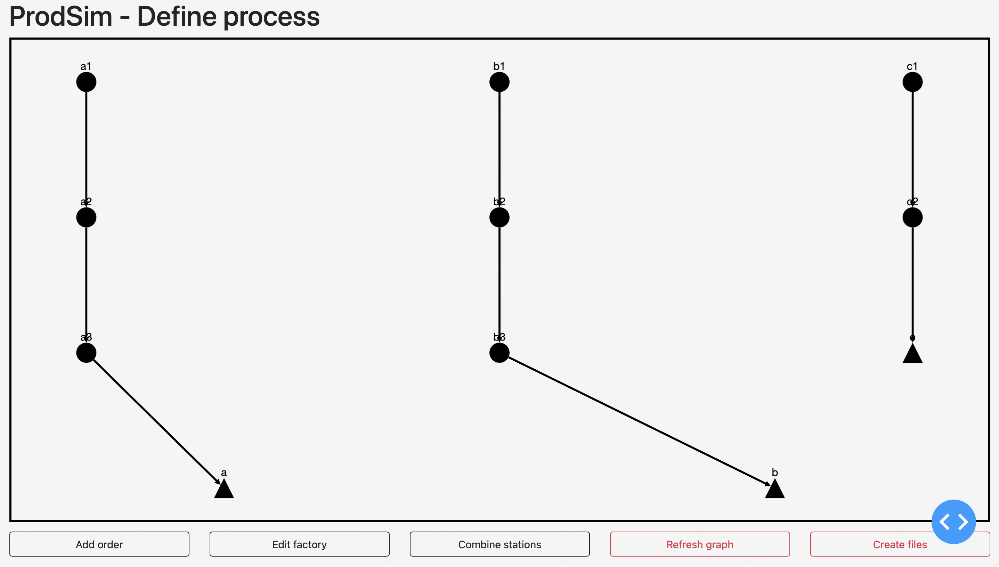
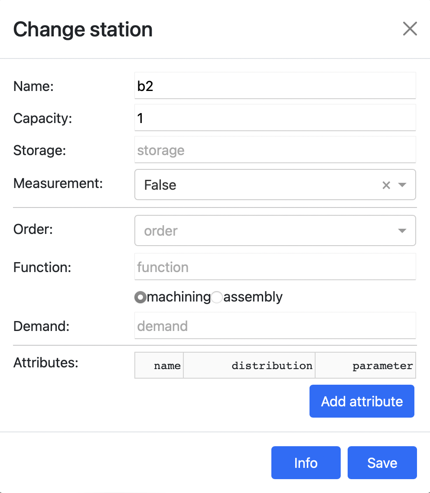
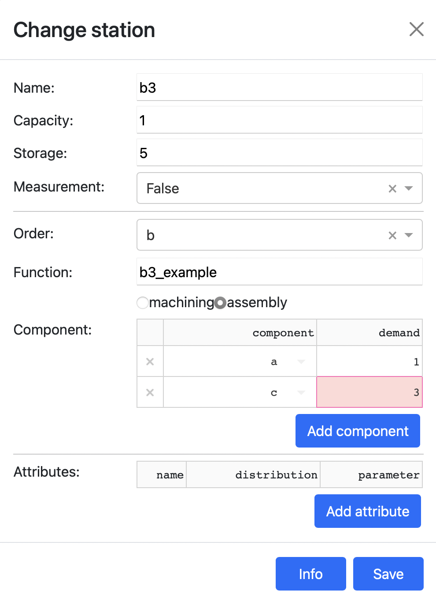
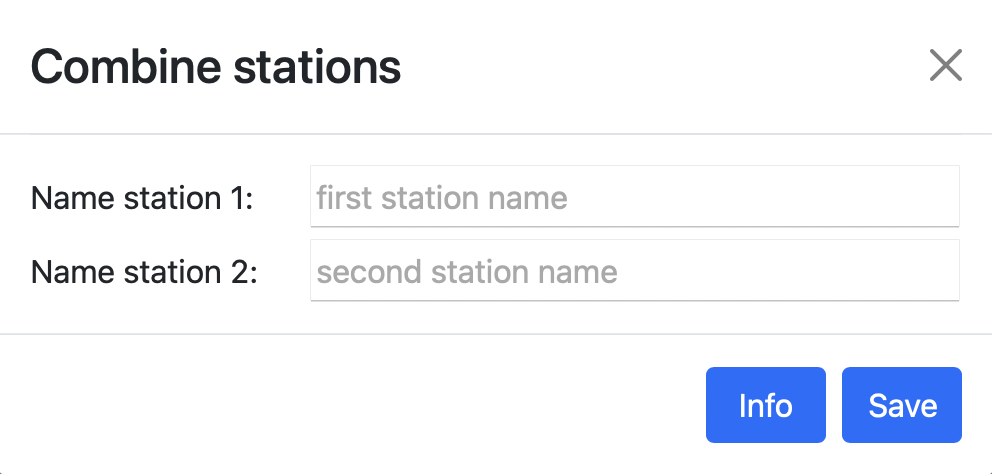
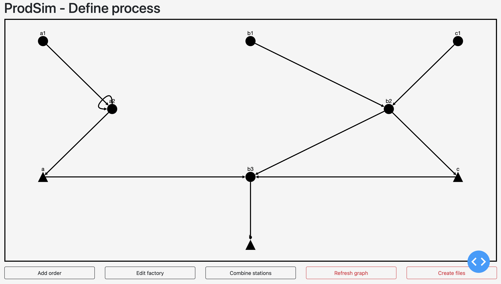
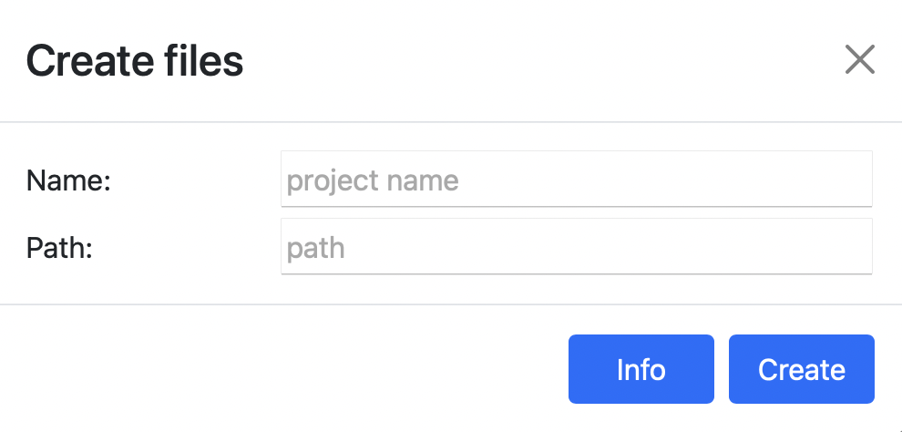

Defining processes
In general, the structure of the process is described in a JSON file and the actions in a python-script (see Interface Files). Since the initial setup of these files is time consuming and discourages the user from using ProdSim for the first time, a web application for defining new processes is offered. When the structure of a process has been completely defined and individual parameters need to be changed between simulation runs, it is easier to change them directly in the corresponding JSON file instead of using the application.
The application is intended as an optional extension of Base-ProdSim and can be easily removed from the project during individual ongoing development of ProdSim.
The following describes how the given fictitious production process can be modeled.

Note
The application is not part of the actual project and is still under development. Please report bugs and malfunctions, as well as useful enhancement suggestions.
Start the application
To start the application the method define_process has to be called on a simulation environment.
from prodsim import Environment
if __name__ == '__main__':
# Create simulation environment
env = Environment()
# Start the application
env.define_process()
Copying the link into a browser (or clicking on the link, depending on your IDE) will open the following window.

Create and change order
In order to define a new process, it is recommended to start with creating all used orders and to use them as a base for further operations. New orders can be created using the add order button. The following dialog opens.

Thereby only the fields order name and source name must be filled with unique strings. All other fields are optional and will be filled with the default values (see: interface files) if not filled.
Warning
The name of an order, as well as the number of stations, cannot be changed afterwards.
The number of stations corresponds to the number of process steps that the items of the corresponding order pass through. For example, order a contains three stations because the second station is visited twice (see).
Once all orders have been defined, the graph is initially empty, because changes to the graph are only displayed when the refresh graph button is clicked (internally, these changes are also saved without clicking the button). Clicking the refresh button results in the following graph:
{kind=link}
To change individual properties of an order or to assign user-defined attributes to the items of this order, click on the end storage (triangle) of this order in the graph and perform the needed changes in the opening dialog.

Change station
Similar to the orders, single stations can be clicked to change their properties. The opening dialog consists of three areas. In the upper area, the core properties (name, capacity, storage, measurement) of the station can be changed. In the second area, for each order in which the station is involved, the function that will be performed and whether machining or assembly will be performed can be specified. In the third area, user-defined attributes may be assigned to the station.
{kind=link}
For example, components of orders a and c are to be assembled at the third station of order b (see). This can be defined in the dialog as follows:
{kind=link}
In addition, the second station in job a is to be used twice and job b and c should share a station. This can be realized with the button combine stations. By clicking on the button the following dialog opens:
{kind=link}
The names of the two stations that will be combined into a single station can be entered here. The station in the second field will be deleted and replaced by the station in the first field. After carrying out the modifications described above, the graph can be refreshed by clicking refresh graph. The changes made ( assemblies and combined use of stations) appear in the graph.
{kind=link}
Edit factory
Finally, the properties of the factory can be set. By clicking the button edit factory the following dialog opens.

All global functions and global attributes can be entered here.
Create files
Once the entire process has been defined as required, the corresponding output files must be created and saved. To do this, the following dialog can be opened by clicking the create files button.
{kind=link}
The first field contains the name of the project and the second field the path (relative or absolute) to the directory where the output files will be saved. Two files will be created. A JSON file containing the entire structure of the process and a python-script containing all necessary functions (sources and sinks, process models and global functions). These functions are empty and must be filled with the desired content before the simulation.
Warning
No data is cached during the definition of a process, so closing the window deletes all data.